For little ones, ages 0 to 8
Milo's picture books
Milo's Adventures and Learn Science with Milo: warm, funny stories about Milo and his family, in English and Afrikaans.
See the picture books →Picture books and colouring books for little ones. Colouring books for grown-ups.


Milo's Adventures and Learn Science with Milo: warm, funny stories about Milo and his family, in English and Afrikaans.
See the picture books →

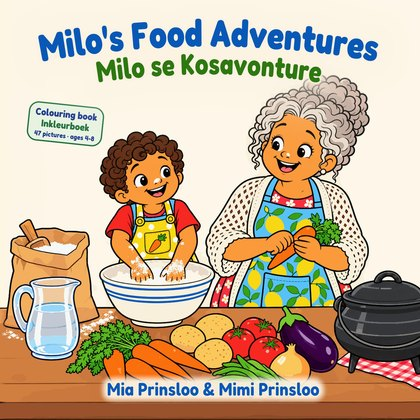
Milo colouring books for ages 1 to 14, in English and Afrikaans.
See the kids' books →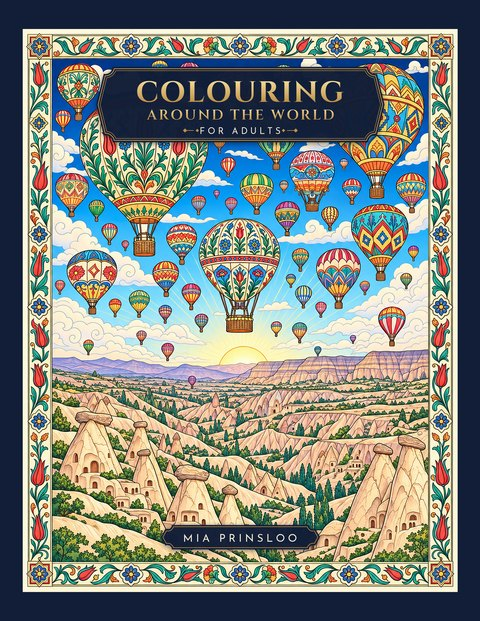
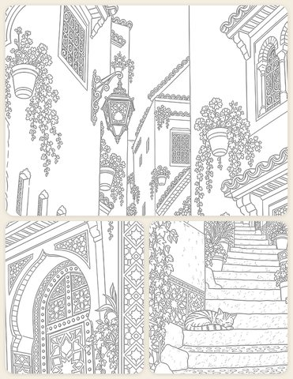
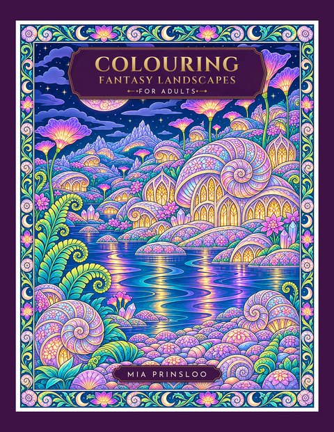
Intricate, detailed line art for slow, mindful colouring.
See the colouring books →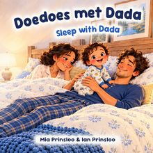
Doedoes met DadaAges 0–4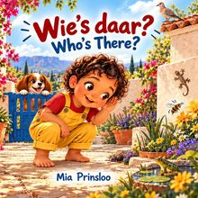
Wie's daar?Ages 0–5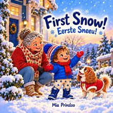
First Snow!Ages 1–5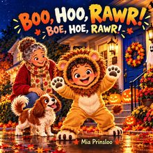
Boo, Hoo, Rawr!Ages 1–5 So Much to Be Thankful ForAges 1–5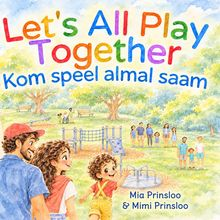
Let's All Play TogetherAges 1–5 Snowy Christmas, Sunny ChristmasAges 2–6 Up, Up, Away!Ages 2–6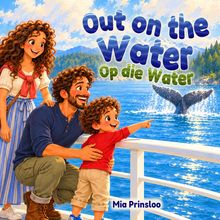
Out on the WaterAges 2–6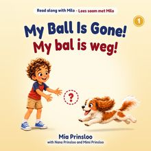
My Ball Is Gone!Ages 4–7 Snowy Christmas, Sunny ChristmasAges 2–6 Up, Up, Away!Ages 2–6 Out on the WaterAges 2–6 First Snow!Ages 1–5 Boo, Hoo, Rawr!Ages 1–5 So Much to Be Thankful ForAges 1–5 Let's All Play TogetherAges 1–5 Wie's daar?Ages 0–5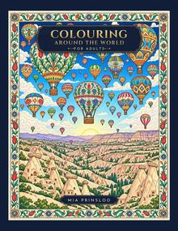
Colouring Around the World for AdultsGrown-ups Colouring Fantasy Landscapes for AdultsGrown-ups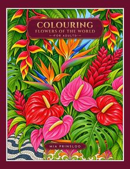
Colouring Flowers of the World for AdultsGrown-ups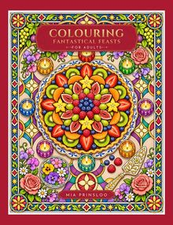
Colouring Fantastical Feasts for AdultsGrown-ups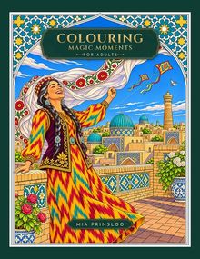
Colouring Magic Moments for AdultsGrown-ups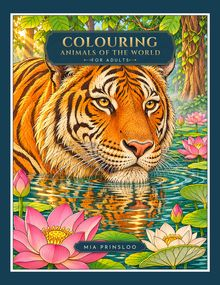
Colouring Animals of the World for AdultsGrown-ups